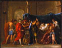

From
the collection


Nicolas
Poussin
The Death of Germanicus
1627
Oil on canvas
H.58 x W.77-3/8 in.
The William Hood Dunwoody Fund
Castiglione
was a great admirer of Poussin's work. By the late 1630s, Poussin's
influence can be easily identified.
The
subject of this, Poussin's first major history painting, comes from
the Annales of the Roman historian Tacitus. The event occurred in
a.d. 19. The
young Roman general Germanicus has just been poisoned by his jealous
adoptive father, the emperor Tiberius. On his deathbed, Germanicus
asks his friends to avenge his murder and his wife to endure her sorrow
bravely.
A key work in Western painting, this tragic picture presents a moral lesson in stoic heroism, seen especially in the restraint and dignity of the mourning soldiers. This painting became the model for countless deathbed scenes for two centuries to come, particularly for Neoclassical art around 1800. Many powerful human themes figure here: death, suffering, injustice, grief, loyalty, and revenge.
Poussin drew on Roman antiquity for the form as well as the subject of this painting. The composition, with its shallow spatial arrangement, is based on a Roman sarcophagus relief. Poussin spent most of his life in Rome, where he created a classical style that strongly influenced both French and Italian art.